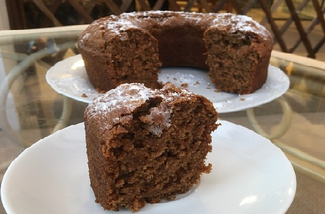

Carrot Cake
Ingredients:
-
2 Cups of Grated Carrot
-
1/2 Cup + 1 tbsp of Apple Sauce or 1 Flax Egg
-
90ml of Olive Oil or Avocado Oil
-
3/4 Cup of Non-Dairy Milk
-
1 tbsp of Vinegar
-
2 tsp of Vanilla Extract
-
256g of All-Purpose Flour
-
1 tsp of Cinnamon
-
A Pinch of Salt
-
3 tsp of Baking Powder
-
1 tsp of Baking Soda
-
1/2 Cup of Sugar

Method:
-
Lightly grease the bottom of a cake pan. (Don't grease the sides; letting the cake cling to the sides helps it rise and stay fluffy).
-
Stir together all of the wet ingredients not including the olive oil and set aside.
-
Add all of the ingredients for the dry mixture to a mixing bowl, and mix well to combine evenly. If your flour or sugar are extra lumpy, sift them in to ensure they can be evenly mixed.
-
Slowly add the vegetable oil to the dry mixture while mixing. Continue to mix well until the texture becomes like crumbly wet sand. Try to get out as many lumps as you can; this takes some elbow grease with a strong fork.
-
Add one third of the wet mixture to the bowl and mix well until evenly combined. Add another one third of the mixture and mix well again. Finally, add the remaining wet mixture and mix thoroughly until smooth. Lastly, stir in the grated carrot.
-
Put the batter in the cake pan and bake for approximately 30 minutes, or until the cake is just pulling away from the sides and toothpick inserted into the center comes out mostly clean. Try to avoid overbaking this cake; it can dry out. Also, avoid opening the oven door at all until the cake has been baking for at least 20 minutes, otherwise that may cause it to sink.
-
Let the cakes cool for a few minutes in the pan, then gently loosen the sides and flip the cakes onto a cooling rack to continue cooling completely. After cooled, you can sprinkle the cake with icing sugar.